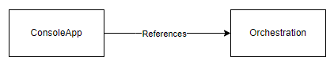
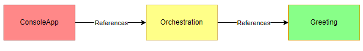
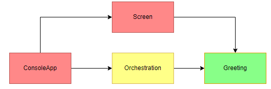
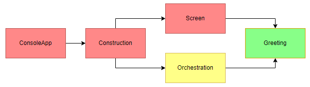

Software Design - An Example
June 15th, 2022
In this article I will show how the approach to creating a high-level structure for an application can be applied in practice. I'll use a familiar example.
Just to refresh your memory, the five high-level responsibilities are:
- Domain
- Infrastructure
- Orchestration
- Construction
- Start-up
Since I postulated that these responsibilities apply to every application. Let's see how they apply to even the simplest possible application.
class Program
{
static void Main(string[] args)
{
Console.WriteLine("Hello, World!");
}
}
Start-up
The start-up responsibility of this console application is covered by the following line:
static void Main(string[] args)
It is convention that the Main method is the program entry point. There can only be one such entry point. If the compiler finds more than one, it will fail.
In newer versions of C# (since C#9) it is possible to even to completely omit the Program class and Main method, and run a program with so-called top-level statements.
Obviously there is always a program entry point. The program has to start somewhere. Nothing is actually happening during start-up in this example. The application just starts, and that's it.
Construction
In such a simple program, there are no complex infrastructure or orchestration objects to create. The Console object is static and just exists. Its construction is implicitly done behind the scenes.
Infrastructure
The infrastructure component exists in the (partial) statement:
Console
This implicitly creates the Console object, providing an object to interact with the console.
Domain
The domain-level object is the message we want to share with the world:
"Hello, World!"
Orchestration
Orchestration-level code ties the infrastructure and domain together. Here it is in the following line:
Console.WriteLine("Hello, World!");
It creates a message, and passes it to the console with the instruction to write it.
Hello, World! refactoring
For a program as simple as "Hello, World!" any refactoring will be more trouble than its worth. However, for any program that actually does something useful, separating the high-level responsibilities will prove useful quite quickly.
Let's take this "Hello, World!" application as an example and refactor it towards the intended design with high-level responsibilities separated.
Orchestration
In the solution I create a new project, a class library simply called "Orchestration". In the project I create a new class:
namespace Orchestration
{
public sealed class Application
{
public void Run()
{
Console.WriteLine("Hello, World!");
}
}
}
Granted, this could have been a static class and a static method. It's a small premature optimization for changes that I know will come.
In the ConsoleApp project, I add a reference to the new Orchestration project. The Program class in the ConsoleApp project ends up like this (taking advantage of C#9 top-level statements feature, I can leave out the class and the Main method):
using Orchestration; new Application().Run();
The reference diagram looks like this:
The Orchestration-level code now does not run in the start-up console app framework anymore. The Orchestration class library does not carry with it all the bagage of the original framework. This makes it more light-weight, more portable and easier to test.
For an app running in the console app framework this is not a big deal, but if the framework were, for example, an WCF SOAP service that you would want to replace, it could matter a lot.
Domain
Next, I'll extract the domain-level code.
I create a new project (class library). Since our domain is about greeting the user with a message, I name the project "Greeting".
I add a static class "Messages", with a const "HelloWorld", which contains the message I want to show. This is obviousluy a very bare-bones way of treating domain-level code, but it suffices as an example..
namespace Greeting
{
public static class Messages
{
public const string HelloWorld = "Hello, World!";
}
}
In the Orchestration project, I add a reference to the "Greeting" project. The code of the Application class can then be updated to:
using static Greeting.Messages;
namespace Orchestration
{
public sealed class Application
{
public void Run() => Console.WriteLine(HelloWorld);
}
}
The reference diagram looks like this:
I've added some colors here. Red is start-up, infrastructure-level and construction-level code. Yellow is orchestration-level code. Green is domain-level code.
- Domain level code should consist of pure functions, and will be easy to unit test. Therefore, I made it green.
- Start-up, infrastructure-level code and construction-level code can often only be tested against live systems (databases, web services, etc.) which makes them harder to test. That is why I made it red.
- Orchestration-level code can be either unit tested in isolation with test-doubles (mocks), or against live systems. Because of this choice, I made it yellow.
The color coding makes it easier for me to understand what unit testing strategy I should use for the various projects.
Infrastructure
As a next step, I will extract the infrastructure code from the orchestration code.
First, I define an interface in the domain-level code, in this case the Greeting project, allowing the orchestration-level code to send a message to a messenger.
namespace Greeting
{
public interface IMessenger
{
void Send(string message);
}
}
In my application I can use this interface, instead of directly writing to the Console. After all, the orchestration-level code is not interested in the particulars of how the message is sent. It doesn't care whether the message is written to a console, or a file, or a database, etc.
using Greeting;
namespace Orchestration
{
public sealed class Application
{
private readonly IMessenger messenger;
public Application(IMessenger messenger) => this.messenger = messenger;
public void Run() => messenger.Send(Messages.HelloWorld);
}
}
Now I have to implement the interface somewhere where it actually writes to the console.
I create a new project called "Screen". I could have named it "Console", but that might be a bit confusing, since the start-up project is already called "ConsoleApp".
The "Screen" project references the "Greeting" project (a domain-level project), and I implement the IMessenger interface in a ScreenWriter class:
using Greeting;
namespace Screen
{
public sealed class ScreenWriter : IMessenger
{
public void Send(string message) => Console.WriteLine(message);
}
}
Defining an interface in the domain level code and then implementing it in the infrastructure is a common pattern, which is why I am showing it here. There are other ways to do it, and I may show that in a future article.
Finally, I have to update the code in the Program class to satisfy the change in the constructor of the Application:
using Orchestration; using Screen; new Application(new ScreenWriter()).Run();
The reference diagram now looks like this:
The infrastructure (Screen) references only the domain-level (Greeting). The orchestration-level code only references the domain-level.
The rules of thumb here are:
- Infrastructure references domain
- Infrastructure does not reference orchestration
- Infrastructure does not reference other infrastructure
- Orchestration references domain
- Orchestration may reference other orchestration
- Orchestration does not reference infrastructure
- Domain may only reference other domain
An advantage of putting things in separate projects is that it prohibits accidental cyclical references. Also, it clarifies the references between the various responsibilites. When all the code is in one project, it is easier to mess this up.
The "ConsoleApp" project references both the "Screen" and the "Orchestration" projects. This is because the "ConsoleApp" project currently covers both the Start-up responsibility and the Construction responsibility.
Let's fix that.
Construction
Again, I add a new project, this time called "Construction", and reference the "Screen" project and the "Orchestration" project. I add a class called Builder, shown here:
using Orchestration;
using Screen;
namespace Construction
{
public static class Builder
{
public static Application Application => new Application(new ScreenWriter());
}
}
In the "ConsoleApp" project, I can remove the references to the "Screen" and "Orchestration" projects, and instead have only a reference to the "Construction" project.
The code in the Program class can then be changed to:
Construction.Builder.Application.Run();
The following rules of thumb can be added to the list above:
- Start-up references only construction
- Construction may reference anything
The final reference diagram:
The construction project is colored red, because it is typically only testable through integrated tests with live systems.
Summary
Again, I want to emphasize that for a program as simple as Hello World this kind of refactoring is overkill. Hopefully, that is obvious. However, using such a simple example allows me to illustrate the kind of structure I'm aiming for in my software.
It is my experience that for any program that actually does something useful, in a corporate business setting, this design will prove useful.
In this article I showed how to separate the five high-level responsibilities by moving the corresponding code to their own projects.
- The domain-level code of the messages was moved to the Greeting project, since the purpose of the program, from the point of the domain, is to greet the user with a message
- The infrastructure-level code of actually writing a message to the screen was moved to the Screen project
- An Orchestration project was created, with code to supply the interaction between the infrastructure and the domain, through an interface defined on the domain-level
- A Construction project was created with a Builder class that knows how to create the Orchestration objects, in this case the Application object
- The rules of thumb regarding referencing between various project were listed and demonstrated
Obviously, more detail can be added to this, and I plan to do so in future articles.
If you made it this far, you are absolutely amazing.
-- Rene Wiersma